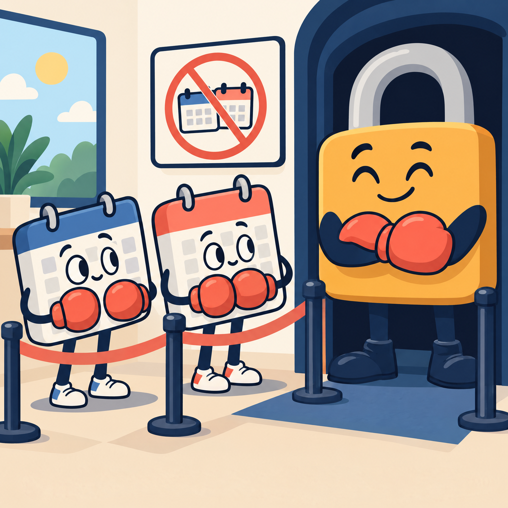

Schedules
Keep daily, hourly, weekly, yearly, and one-shot skills in tidy frequency buckets.
THE TINY WORKER WITH A BIG CLOCK
A cheerful, safety-minded cron worker for Muse AI skills, shell scripts, retries, locks, and the occasional sleepy cat.
WHAT IS MUSE-CRON?
muse-cron turns a tidy directory of skill definitions into dependable, inspectable jobs. Put a skill in a frequency bucket, describe what it should do, and let the worker handle scheduling, locks, timeouts, retries, logs, and state.
It is intentionally small and transparent: standard-library Python, Markdown prompts, shell-script support, and an agent adapter that can connect to your Muse runtime through MUSE_AGENT_COMMAND.
Keep daily, hourly, weekly, yearly, and one-shot skills in tidy frequency buckets.
Per-skill locks stop jobs from tripping over each other in the hallway.
Use an agent prompt, a shell script, or both. The worker does not judge.
HOW IT WORKS
Write frontmatter and a clear prompt or companion script.
Catch malformed skills before they land in the 3 a.m. queue.
Run with a lock, timeout, retries, output capture, and state.
Read per-skill logs and the last-run status at a glance.
BUCKETS AT A GLANCE
Use the explicit schedule in a skill when you need a custom expression. Run-once jobs use an ISO-8601 run_at timestamp and can archive themselves after success.

Overlap prevention, but make it polite.
Agents and scripts can be friends.
COME HANG OUT
Join the Muse AI community and swap ideas with other people who think a cron worker deserves a personality.
THREE COMMANDS TO HAPPINESS
Run these from the project root.
./bin/muse-cron validate
./bin/muse-cron list
./bin/muse-cron run --due